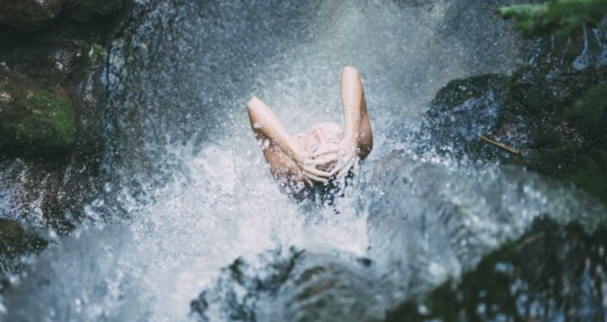
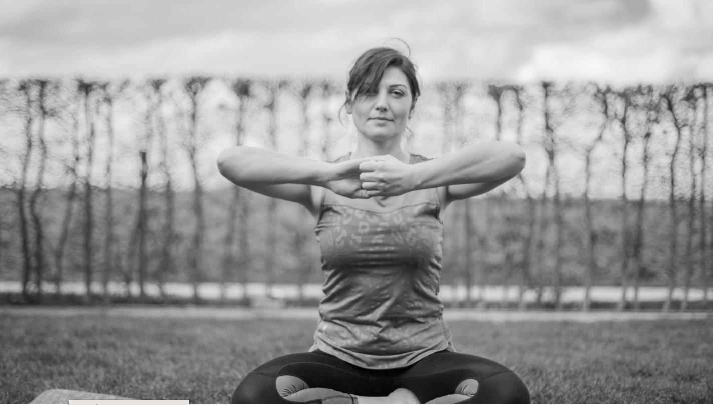

| ლოგო | დასახელება | აღწერა |
|---|---|---|
 |
კუნდალინი იოგა. კუნდალინი იოგას ტექნიკა, რომელიც ასევე ცნობილია როგორც Mindfulness Yoga, დასავლეთში გააცნო ოსტატმა იოგი ბჰაჯანმა 1960-იან წლებში. ეს საოცარი ტექნოლოგია, ყველაზე არაჩვეულებრივი იოგას ყველა სახეობას შორის, მუშაობს 16-ჯერ უფრო სწრაფად, ვიდრე ნებისმიერი სხვა ტიპის იოგა. კუნდალინი იოგა არის ყველაზე სწრაფი გზა სხეულის, გონებისა და სულის ურთიერთობის დამყარებისა და დასაბალანსებლად. |
კუნდალინი იოგა პრაქტიკის მთავარი მიზანია სულის ამაღლებაა |
|  | ცივი შხაპი.წყალი ადამიანის სხეულის 60 პროცენტს შეადგენს. წყალი უნარჩუნებს თქვენს კანს ელასტიურობასა და ბრწყინვალებას, ხსნის კაპილარებს, წმინდავს ორგანოებს, ანიჭებს სისხლს სიჯანსაღეს, ასტიმულირებს ჯირკვლოვანი სისტემის ჯანმრთელ სეკრეციას. | Რატომ უნდა მივიღოთ ცივი შხაპი |
|  | რა მომცა მე პერსონალურმა განვითარებამ და იოგამ. ადამიანი უხსოვარი დროიდან ეძებდა საშუალებებს ეპოვა უკვდავების წამალი, შემდეგ სილამაზის და დღეს კი გამალებული ეძებს გასაღებს, რომ სტრესისაგან გათავისუფლდეს, რადგან სტრესი არის ის რაც სიცოცხლეს ასწრაფებს და ნაადრევად აბერებს კიდეც. დღეს სტრესისაგან გასათავისუფლებლად უმრავი საშუალება არსებობს, არის ეს ტრადიციული მედიტაცია ან ალტერნატიული მედიცინა, ადამიანი დღეს სხვადასხვა გზას მიმართავს, ოღონდ რაიმე მარტივი საშუალება იპოვნოს და გათავისუფლდეს ყოველდღიური რუტინისაგან რომელსაც სტრესი, ნეგატიური ფიქრები და სხვა არასასიამოვნო მდგომარეობა მოაქვს. |
იოგამ სხეული უფრო ძლიერი გახადა, იმუნიტეტი გააძლიერა |